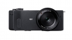
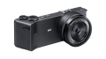
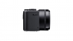
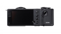
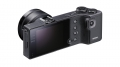
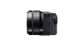
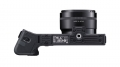
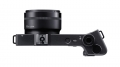

器材库 > 不可换镜头数码相机 > Dp2 Quattro

规格总览
发布日期
2014-02-10
影像规格
影像传感器
Foveon X3
影像传感器尺寸
23.5×15.7mm
总像素
3300万
有效像素
2900万
影像处理器
TRUE III
静态图像尺寸
RAW：5424×3616,2712×1808,2704×1808[21:9]7680×3296,5424×2328,2704×1160[16:9]7680×4320,5424×3048,2704×1520[3:2]7680×5120,5424×3616,2704×1808[4:3]6816×5120,4816×3616,2400×1808[1:1]5120×5120,3616×3616,1808×1808
静态图像格式
JPEG, RAW, RAW+JPEG
画幅比
3:2, 4:3, 16:9, 1:1, 21:9
镜头和对焦
镜头结构
8片/6组
焦距
30mm
等效35mm画幅焦距
45mm
最大光圈
f/2.8
最近对焦距离
28cm
曝光控制
测光模式
中央重点测光, 多分区评价测光, 点测光
曝光模式
P（程序自动曝光）, A（光圈优先自动曝光）, S（快门速度优先自动曝光）, M（手动测光曝光）
快门速度
1/2000秒～30秒
曝光补偿
±3EV以1/3EV级调整
自动曝光锁
有
ISO感光度
ISO 100 - ISO 6400
白平衡
白炽灯, 闪光灯, 色温调节, 阴天, 荧光灯, 自定义, 阴影, 自动, 晴天
自拍
10秒, 2秒
取景规格
LCD类型
彩色TFT LCD
LCD尺寸
3.0英寸
LCD像素
92万
文件输入/输出
存储卡
SD/SDHC, SDXC
电源
电池
锂离子充电电池BP-51
续航能力
可拍摄约200张
外观
颜色
黑色
尺寸
161.4×67×81.6mm
重量
410g
其它
附件
镜头盖, 闪光灯插座盖, 手机挂件, 电池组BP-51, 充电器, 充电器用AC线缆, USB线, 使用说明书
promise3232015-03-18 21:304.5 分
操作性 4.00功能性 5.00美观性 3.50趣味性 5.00耐用性 5.00性价比 3.50解像力 5.00色彩还原 5.00
独色2014-12-03 21:564.38 分
操作性 4.50功能性 4.50美观性 4.50趣味性 4.50耐用性 4.50性价比 2.50解像力 5.00色彩还原 5.00
产品图 / 样片
Dp2 Quattro

Dp2 Quattro

Dp2 Quattro

Dp2 Quattro

Dp2 Quattro

Dp2 Quattro

Dp2 Quattro

Dp2 Quattro
评测 / 相关文章
- 详细内容 （存档）
- 适马dp2 Quattro首发评测 （存档）
- ［试用］原图直击 适马dp2Q北海道风光实拍 （存档）
- ［试用］DP2Q日本行使用心得 （存档）
- ［试用］风波中的DP2Quattro 一个老用户的使用感受 （存档）
- ［试用］适马DP2 Quattro实拍样片 （存档）
- ［试用］带着二球去扫街——DP2Q试用手札 （存档）
- ［试用］DP2M对比DP2Q第一回合 （存档）
- ［试用］中国首台Dp2Q开箱图及试机 （存档）
- ［资讯］适马dp2 Quattro官方样片欣赏 （存档）
- ［资讯］适马dp2 Quattro上市时间确定 （存档）
相关文章
- ［试用］原图直击 适马dp2Q北海道风光实拍 （存档）
- ［试用］DP2Q日本行使用心得 （存档）
- ［试用］风波中的DP2Quattro 一个老用户的使用感受 （存档）
- ［试用］适马DP2 Quattro实拍样片 （存档）
- ［试用］带着二球去扫街——DP2Q试用手札 （存档）
- ［试用］DP2M对比DP2Q第一回合 （存档）
- ［试用］适马dp2 Quattro首发评测 （存档）
- ［试用］中国首台Dp2Q开箱图及试机 （存档）
- ［资讯］适马dp2 Quattro官方样片欣赏 （存档）
- ［资讯］适马dp2 Quattro上市时间确定 （存档）
- ［资讯］适马dp新春交流会 DP2 Quattro真机现身 （原站已下线）
- ［试用］X3|dp2Q 西藏向西 - 大美阿里 （原站已下线）
- ［行情］适马dpQ系列相机给力降价仅为4299! （原站已下线）
- ［资讯］修正红色溢出 适马更新Photo Pro软件 （存档）